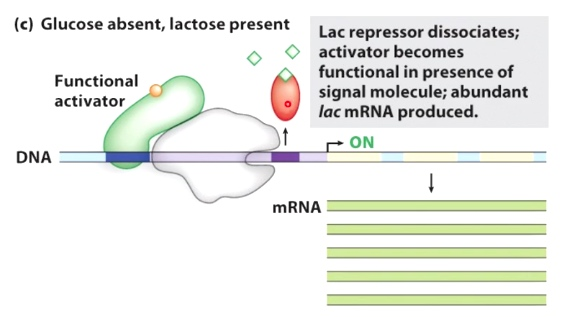
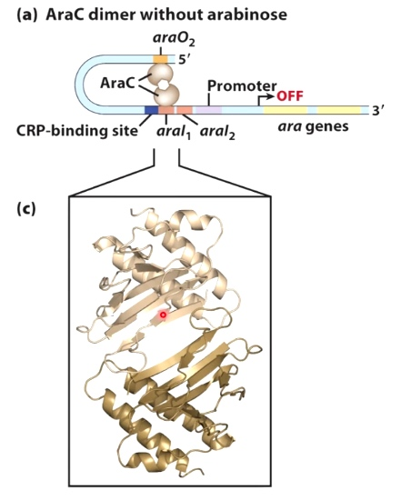

Regulation of Gene Expression: Basic Principles
Many Ways to Regulatet Gene Expression
Examples of Gene Regulation that We Will Discuss
Transcription Initiation
- Arabinose Operon: regulation of RNA polymerase binding
- Galactose Operon: allosteric regulation of RNA polymerase
- Mercury detoxification: regulation of -35 and -10 box spacing
Transcription Elongation
- Tryptophan Operon: attenuation of transcription elongation
Translation Initiation
- Riboswitches
Two Generic Ways to Regulate Transcription Initiation
Negative Control
Binding of the repressor prevents binding of RNA polymerase to promoter sequence.
Positive Control
Five Guiding Principles
Guiding Principle #1 DNA looping can affect transcription
Positive
By looping the DNA, the transcription activator can get access to RNA polymerase. Then initiate transcription.
Negative
Guiding Principle #2L Coactivators/Corepressors can act as bridges and barriers
Coactivator will bridge activator and RNA polymerase
Example: mediator
Corepressor will bind to activator and preventing the association of the activator with RNA polymerase
Guiding Principle #3: Effectors(signaling molecules) Impact Regulation
Effector causes dissociation of repressor from DNA, inducing transcription
Effector causes biinding of repressor to DNA, inhibiting transcription.
Guiding Principle #4: Signal Integration is Common
Glucose present, lactose absent
Lac repressor inhibit the transcription. The activator is nonfunctional.
Glucose present, lactose present
Glucose absent, lactose present
The activator becomes functional

Guiding Principle #5: Groups of genes can be regulated globally
The activator can bind upstream of coordinated set of genes.
Example
- Alternative sigma factors
By removal of the repressors.
Example
- The SOS response in E.coli
The LexA repress the binding. The DNA damage induces LexA inactivation.
Molecular Level.
- DNA damage creates single-stranded DNA
- RecA binds to the single-stranded DNA
- DNA-bound RecA causes LexA repressor to undergo self-cleavage
Mechanisms and Examples in Bacteria
Mechanism 1: Recruitment of RNA Polymerase
Basal Level of Transcription: RNA polymerase together with sigma factor can bind to the promoter but only low levels of transcripts that are being made.
Repressor protein can prevent combination of RNA polymerase to the promoter.
Activator can assist with the recuitment of RNA polymerase to the promoter.
Example: the araBAD operon is regulated by the AraC and CAP activators
Logic(what would the organism want to do in a given context):
The ara gene operon encodes proteins that metabolize the sugar arabinose
Turn ara gene expression on when arabinose is present
Really turn ara gene expression on when glucose is absent
AraC dimer without arabinose
Without the arabinose, the AraC protein form a dimer. The dimer binds to two sites of the DNA and form a loop.

This looping keeps RNA polymerase from being able to bind. And it turn gene transcription off.
AraC dimer with arabinose
Alpha helix interact with each other. Now AraC is able to dimerize two different sites. Next to the promoter. This helps to recuit RNA polymerase. And turns the gene transcription on.
If glucose is absent
It causes an accumulation of cAMP, which binds to the the cyclic AMP response protein(CRP). This is an activator protein. Further increases transctiption at the Ara genes.
Mechanism2: Allosteric Activation of RNA Polymerase
Here we have RNA polymerase that is bound in the close complex to the promoter, but is unable to spontaneously isomerize, therefore gets no transcription.
After the activator binds, this helps RNA polymerase transition to the open complex.(normally spontaneous)
Now is activated level of transcription.
Example: the Gal repressor prevents formation of the open complex
Logic:
The gal gene operon encodes proteins that metabolize the sugar galactose
Turn gal gene expression on when galactose is present
Really turn gal gene expression on when glucose is absent
Transcription off
RNA polymerase stays in the closed complex when repressor is present
The repressor doesn't prevent binding of RNA polymerase to the promoter sequence. But in this orientation, RNA polyerase stays the closed complex.
Galactose is present and glucose is absent
Absence of repressor allows isomerization of RNA pol Low glucose fully activates transcription
Ths repressor has dissociated.
Example: Mercury Detoxification in Bacteria: The MerR Activator Twists the DNA
Control Protein is a Mer Activator
19 bp spacer between the sigma binding boxes (instead of 17 bp)
This makes it difficult for sigma factor to associate with this promoter, and it results in no expression of merT gene.
merT is responsible for the detoxification at mercury.
When mercury is presented, which causes formation of change of MerR. MerR + Mercury is going to bind to this promoter sequence and is going to cause the DNA to twist. Now -35 and -10 are in the currect phase for allowing RNA polyerase to bind and transsition to the open complex.